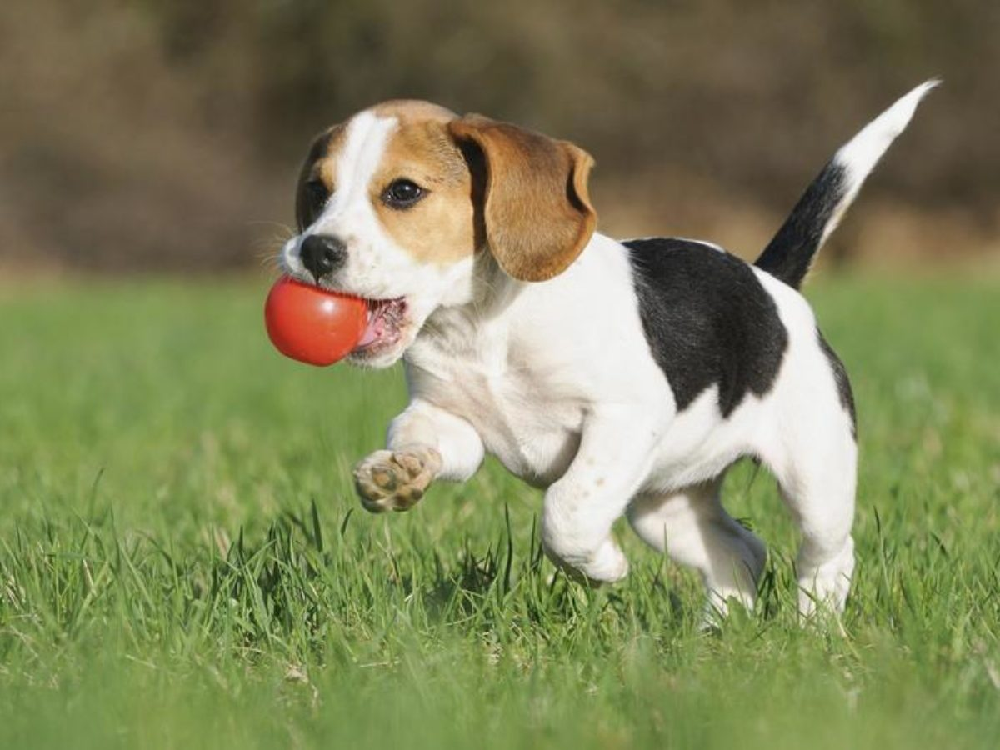

|
|

Beagle
|
Weight:
Coat:
Color:
|
10 - 11 kg
Short haired, hard coat of medium length
Many colors
|
The beagle is a breed of small hound that is similar in appearance
to the much larger foxhound. The beagle is a scent hound, developed
primarily for hunting hare (beagling). With a great sense of smell
and superior tracking instinct, the beagle is employed as detection
dog for prohibited agricultural imports and foodstuffs in quarantine
around the world. The beagle is intelligent but single- minded. It
is a popular pet due to its size, good temper, and lack of inherited
health problems.
|